iOS SimulatormacOS only
Built into the editor
It runs through Apple's SimulatorKit, inside an Asylum tab. Pick the runtime and the device, manage simulators and set a fake location.
An editor for mobile and full-stack work with an iOS simulator, an Android emulator, a browser, API, database and Docker inside it. Plus an agent that knows how to use all of it. Built on Zed, in Rust, with no account and no subscription.
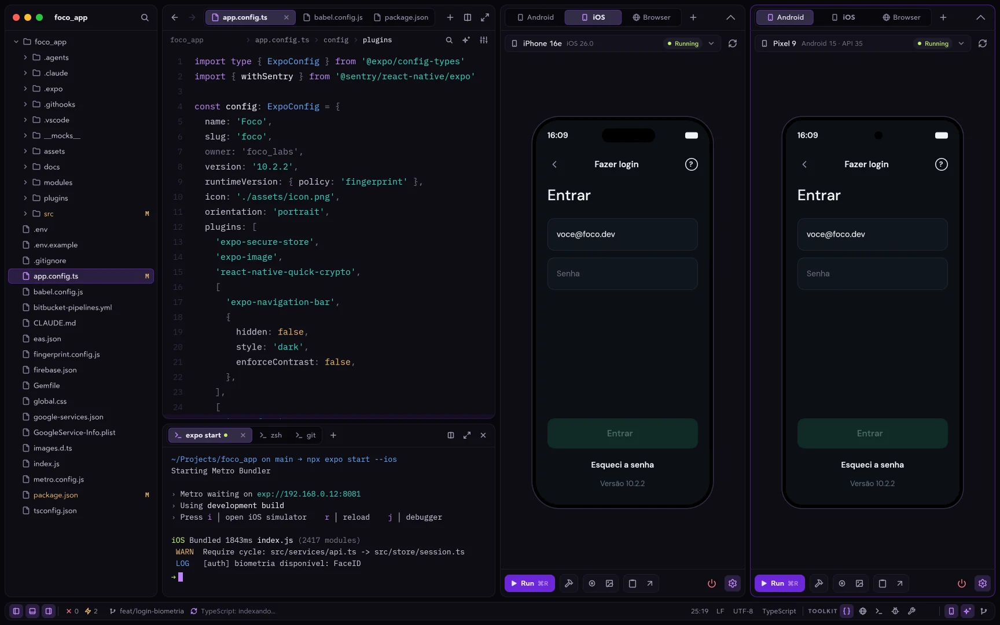
Simulators
I got tired of jumping between Xcode, Android Studio and the editor. Here the devices sit in a tab, side by side, and the agent can use them too.
It runs through Apple's SimulatorKit, inside an Asylum tab. Pick the runtime and the device, manage simulators and set a fake location.
Asylum downloads the JDK, the SDK and the system images and creates the AVDs on its own. Several emulators run at once, in the same panel.
A browser in a workspace tab, with DevTools. It also opens the project's PDFs without leaving the editor.
The agent uses them too device_tap · device_swipe · device_type · device_screenshot · device_logs · browser_click · browser_console · browser_eval
All in one window
Database, API, containers, logs, PRs and tasks become editor docks, and every dock becomes a tool for the agent.
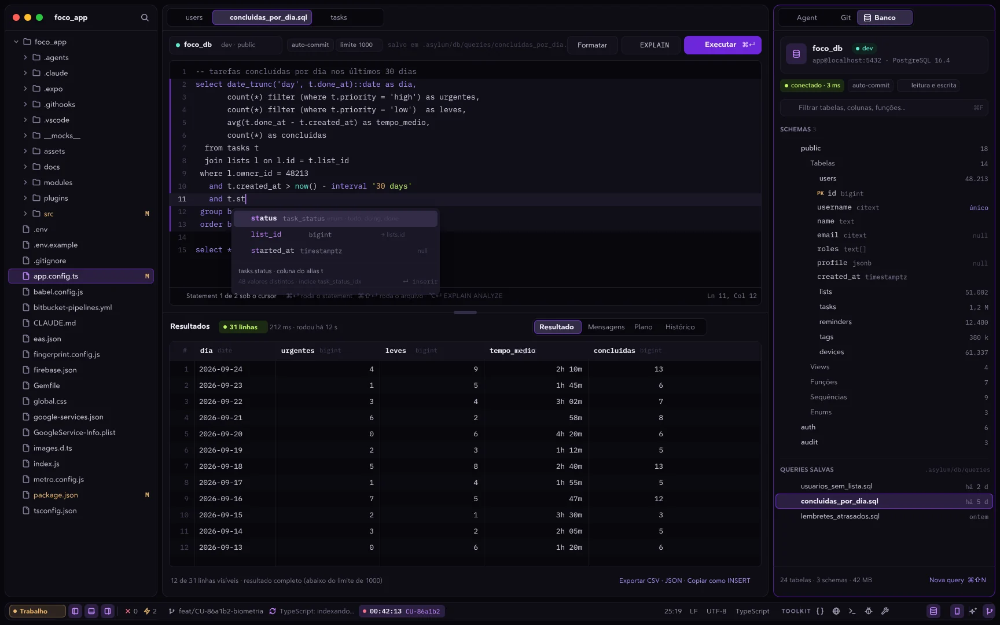
Database · PostgreSQL
Connect over TLS or an SSH tunnel, with a catalog tree and a paged grid. Edit cells and apply everything in one transaction. The agent reads through a read-only connection.
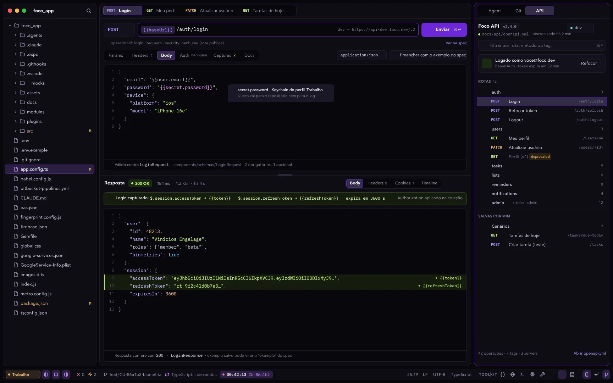
API client · OpenAPI / Swagger
Tags become folders, operations become requests, servers become environments and securitySchemes becomes the login. Send a request straight from the spec with a code lens.
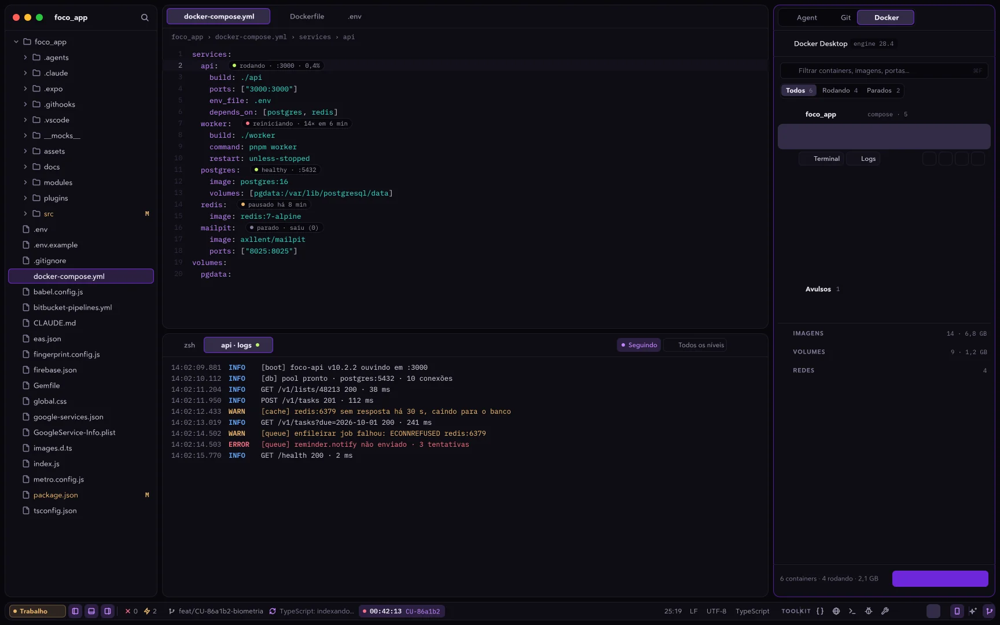
Docker · Compose
Terminal and logs in the middle of the editor, with each service's state marked right in docker-compose.yml. The agent reads freely, asks before changing anything and never sees your environment variables.
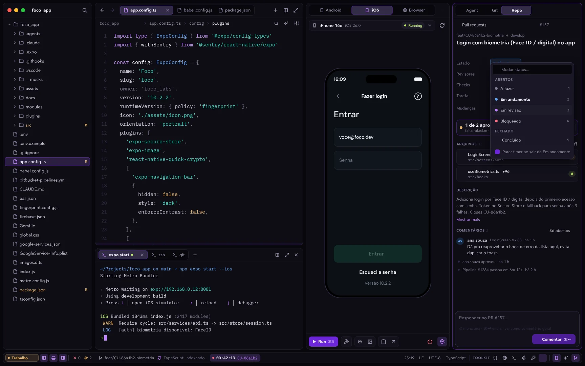
Pull requests · GitHub and Bitbucket
Diffs, comments, checks and merge without opening the website. You can open a PR while looking at the commits you haven't pushed yet, or mention the PR so the agent reviews it.
Elasticsearch
Live tail of your data streams. The agent queries read-only, with personal data masked.
ClickUp
Your tasks in a dock. Ask the agent to comment, move a task or turn the conversation into a user story.
Settings
Settings sync to private gists on your account, with no Asylum server in between. The interface comes in English or Portuguese.
Interface
The agent dock, the status bar and the settings were rebuilt from scratch. There are 245 icons drawn for Asylum, and the whole interface is available in English and Portuguese.
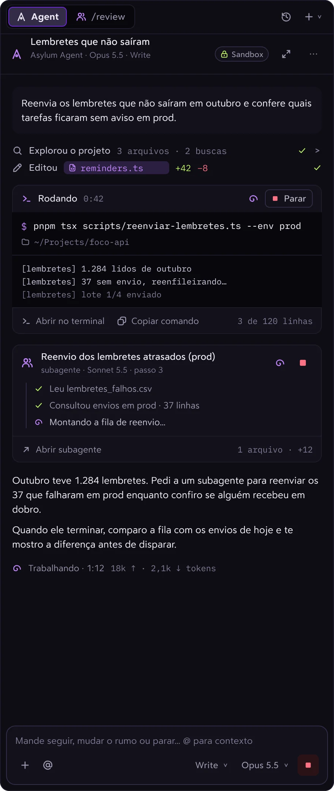
Terminal runs, subagents and edits become cards with state, time and actions. Reads and searches fold into "Explored the project".
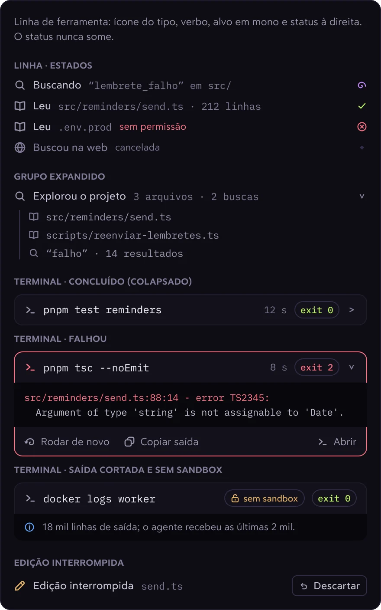
State in plain words, with duration and exit code always in view. Success collapses on its own; a failure opens on the error, with "Run again".
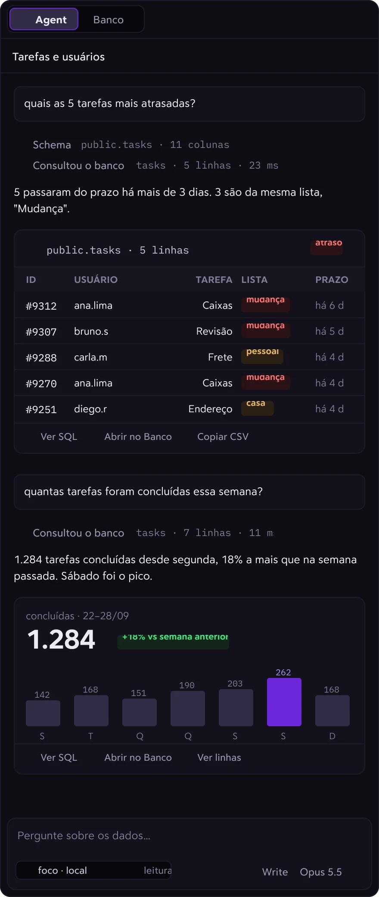
Queries come back as a table and a chart inside the conversation, with "View SQL", "Open in Database" and "Copy CSV".
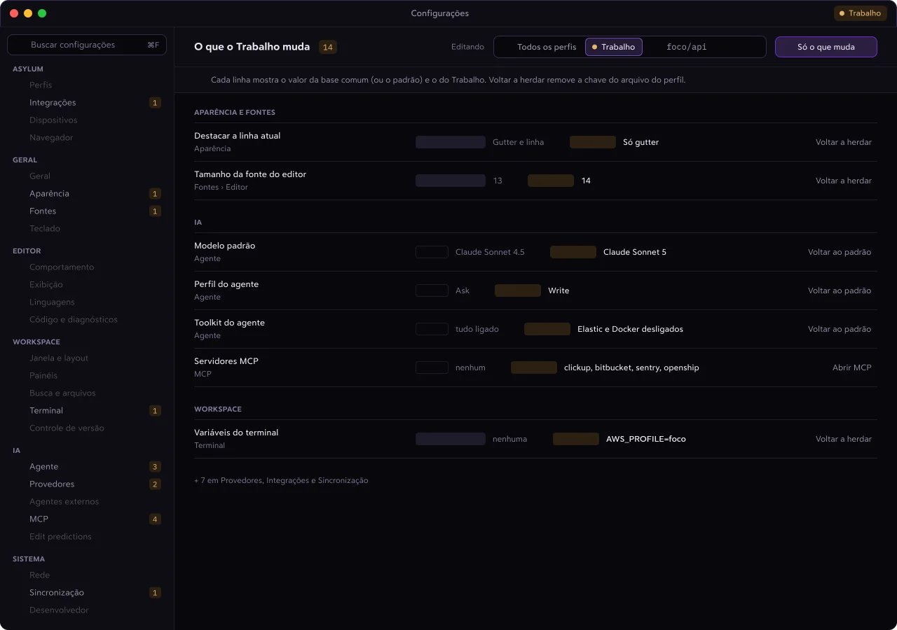
Settings
The window shows which scope you're editing (all profiles, one profile or the project), where each value comes from, and an "Only what changes" filter. It also gained Integrations, Devices, Browser and Sync pages.
Asylum Agent
It plans, runs subagents, drives the simulators and queries the database. And it spends fewer tokens than before doing it.
It proposes the steps and the files. You edit, approve with ⌘↵ and follow the progress in a card.
Create agents you call with a /command, import your Claude Code subagents and chain everything into pipelines with approval steps.
What it learns about the project becomes a note you approve, and that note goes into every new conversation.
Database, API, Docker, PRs, simulators and the browser expose tools to the agent. You turn each toolkit on or off per profile, and every write asks for approval.
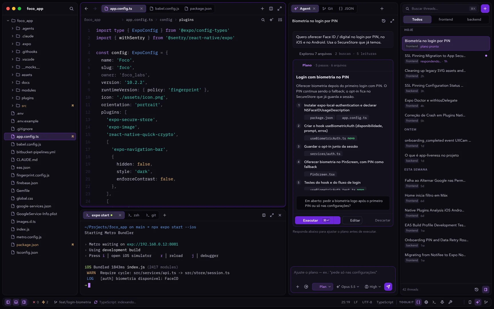
Use whatever model you want
Fewer tokens, the right model
Before every call, Asylum cuts what doesn't help the agent. And each part of the work goes to the cheapest model that can handle it.
On-demand MCP
~380kThat's what one of my profiles used to spend, and half of it came from a single server with 524 tools. Now each server only comes in when the agent asks and you approve.
Terminal
Build progress, passing tests, git hints and repeated lines are dropped before they reach the model. Errors stay whole, with the beginning and the end.
JSON
Fetch, MCP and toolkits send the first and last items of each list and anything that looks like an error. You still see the full result.
repo_map
One call shows the folders and the symbols in each file, with line numbers. Then the agent reads only the part it needs.
→ the thread shows how many tokens were saved → approved learnings save rediscovering the project
Subagents on Auto
Before opening a subagent, the agent checks benchmarks.md: Terminal-Bench, FrontierCode, price and "good for / avoid for" for each model at each effort level. It goes with the cheapest one that gets it done without rework, and the subagent card explains the choice.
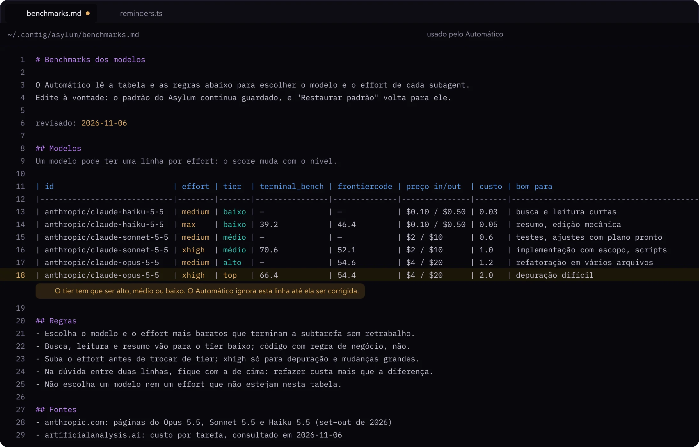
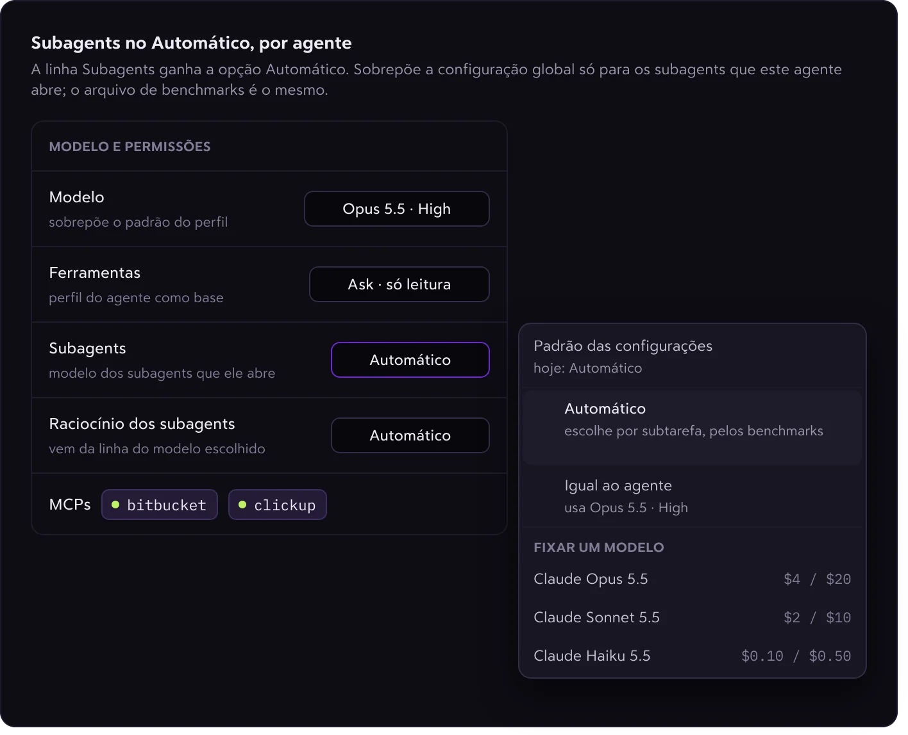
Profiles
Each profile is an isolated instance with its own data, git identity, AI providers, MCP servers, accounts and keychain. Work folders always open in the work profile.
On macOS, each profile gets an icon in its own color in the Dock and in ⌘-Tab.
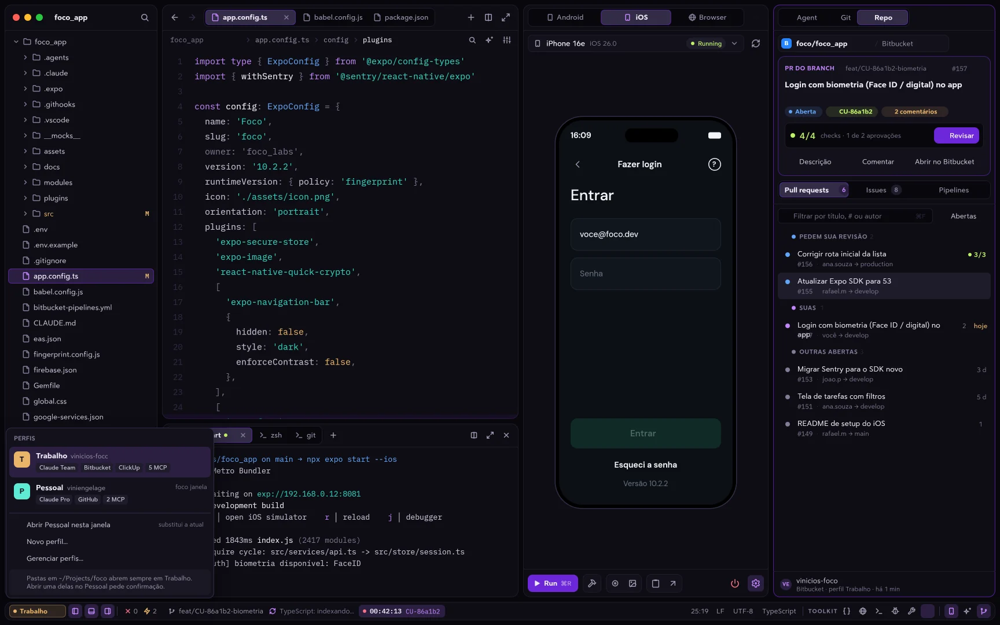
Open source
No account, no subscription and no server of my own. Everything is on GitHub: you can read it, build it, open an issue or send a PR.
An independent fork of Zed, kept up to date with upstream (it's on Zed 1.27 today). What makes Zed fast is still there: GPU rendering, tree-sitter, LSP, multi-buffers and Vim mode.
# 1. download the latest version from # github.com/viniengelage/asylum/releases # 2. open it and pick a profile open -a Asylum asylum ~ $ dev is madness
asylum ~ $ dev is madness_
Free and open source, in English or Portuguese. I built it because I got tired of having ten windows open to take care of a single app.